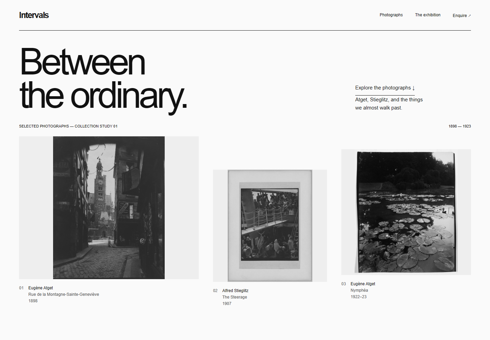
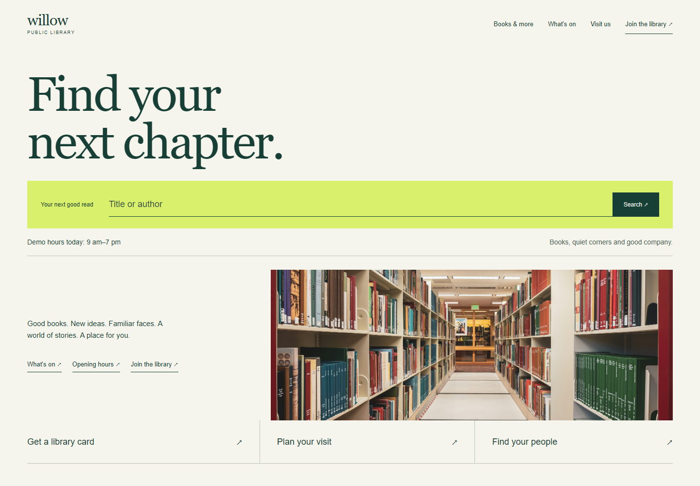
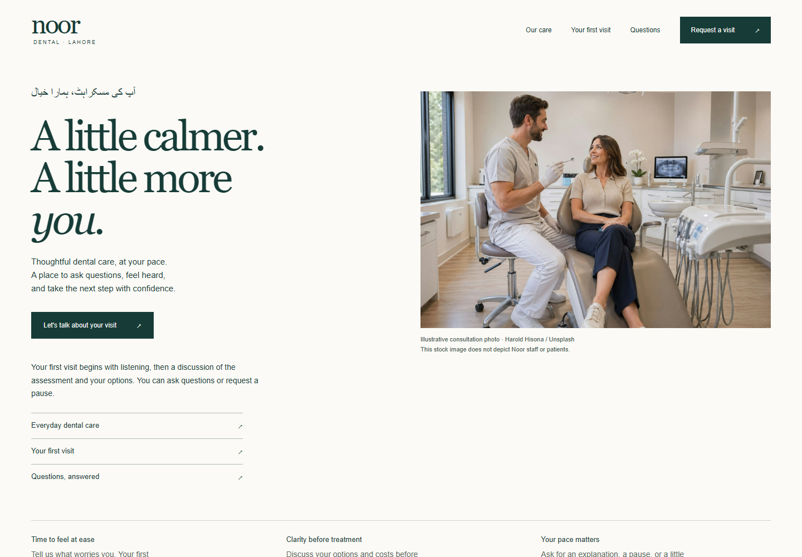
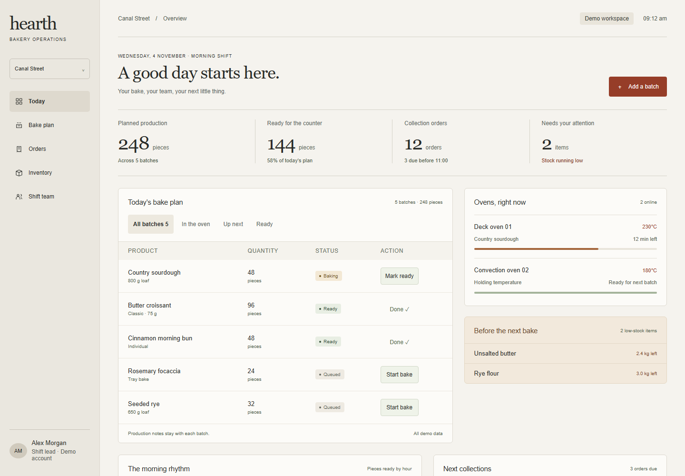

Intervals ↗
Photography, without distraction.
Monochrome · Helvetica · No animationReal compositions, truthful material and working interactions. Each study compares three layouts before choosing a complete design. These are fictional clients, not commercial launches or evidence of superiority over another tool.

Photography, without distraction.
Monochrome · Helvetica · No animation
A public place with a point of view.
Editorial · Catalogue search · Community
Care, at a calmer pace.
English / Urdu · Real imagery · No animation
A working morning, clearly arranged.
Operations · Interactive state · Demo dataThe rebuilt MCP provided a structured brief, three starting compositions and a provenance inventory for every study. A designer then developed and selected the rendered alternatives. Files include original briefs, engine responses, browser captures and a recorded visual review. This is evidence of the local workflow, not an autonomous image-generation engine or a blinded competitor ranking.